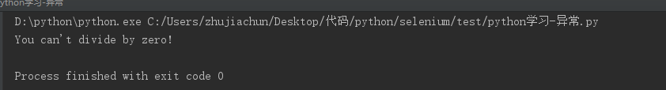

ZeroDivisionError是一个异常对象，python无法按你的要求做时就会创建这个对象.
场景1
场景2
try:
print 5/0
except ZeroDivisionError:
print "You can't divide by zero!"
场景3
try:
print 5/0
except ZeroDivisionError,e:
print e
# coding=UTF-8
while True：
first_number = input("First number: ")
if first_number == "quit"：
break
second_number = input("Second number: ")
try:
answer = int(first_number)/int(second_number)
except ZeroDivisionError,e:
print e
else:
print answer输入两个数字，如果输入quit则退出，如果两数相除有异常则报ZeroDivisionError异常，否则输出结果
用pass语句
# coding=UTF-8
while True:
first_number = input("First number: ")
if first_number == "quit":
break
second_number = input("Second number: ")
try:
answer = int(first_number)/int(second_number)
except ZeroDivisionError:
pass
else:
print answer
转自：https://www.cnblogs.com/bactiy/p/10102862.html
异常名称 描述
BaseException 所有异常的基类
SystemExit 解释器请求退出
KeyboardInterrupt 用户中断执行(通常是输入^C)
Exception 常规错误的基类
StopIteration 迭代器没有更多的值
GeneratorExit 生成器(generator)发生异常来通知退出
StandardError 所有的内建标准异常的基类
ArithmeticError 所有数值计算错误的基类
FloatingPointError 浮点计算错误
OverflowError 数值运算超出最大限制
ZeroDivisionError 除(或取模)零 (所有数据类型)
AssertionError 断言语句失败
AttributeError 对象没有这个属性
EOFError 没有内建输入,到达EOF 标记
EnvironmentError 操作系统错误的基类
IOError 输入/输出操作失败
OSError 操作系统错误
WindowsError 系统调用失败
ImportError 导入模块/对象失败
LookupError 无效数据查询的基类
IndexError 序列中没有此索引(index)
KeyError 映射中没有这个键
MemoryError 内存溢出错误(对于Python 解释器不是致命的)
NameError 未声明/初始化对象 (没有属性)
UnboundLocalError 访问未初始化的本地变量
ReferenceError 弱引用(Weak reference)试图访问已经垃圾回收了的对象
RuntimeError 一般的运行时错误
NotImplementedError 尚未实现的方法
SyntaxError Python 语法错误
IndentationError 缩进错误
TabError Tab 和空格混用
SystemError 一般的解释器系统错误
TypeError 对类型无效的操作
ValueError 传入无效的参数
UnicodeError Unicode 相关的错误
UnicodeDecodeError Unicode 解码时的错误
UnicodeEncodeError Unicode 编码时错误
UnicodeTranslateError Unicode 转换时错误
Warning 警告的基类
DeprecationWarning 关于被弃用的特征的警告
FutureWarning 关于构造将来语义会有改变的警告
OverflowWarning 旧的关于自动提升为长整型(long)的警告
PendingDeprecationWarning 关于特性将会被废弃的警告
RuntimeWarning 可疑的运行时行为(runtime behavior)的警告
SyntaxWarning 可疑的语法的警告
UserWarning 用户代码生成的警告